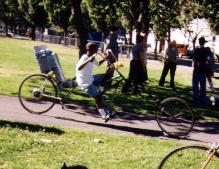
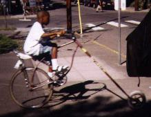
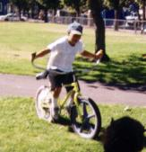
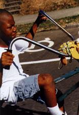
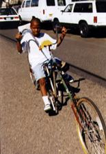

Neighborhood outreach is simple. In fact, it takes no effort at all. The bikes are weird and kids want to ride them. All we have to do is make sure that they come back. Most people can't handle them that well, and are easy to chase down. A chosen few with the inborn ability to operate these machines could theoretically commit an act of theft, but really, despite what the teevee tells us, most people can be trusted.
  
One of those few is this lad Mika, who came upon us when we were at the midpoint of a ride and had laid our bodies down. He had to ride everything, and he wasn't deterred by the constraints of physics and anatomy. He was voluntarily stretching himself on the rack, but he was having fun, so we knew we were doing something right. He couldn't reach Chopagator's saddle - he could barely reach the pedals with that hard metal tube wedged way up... um, we might be hindering our long-term goal of raising several generations of cycling warriors, here. He would even have tried to ride Vlad, but we had to draw the line.
 
(Return to C.H.U.N.K. Operations)
| Copyright 2003 Megulon Five <megulon5@dclxvi.org>. |
|
This work is licensed under a Creative Commons License. | Last modified 12 September 1999. |